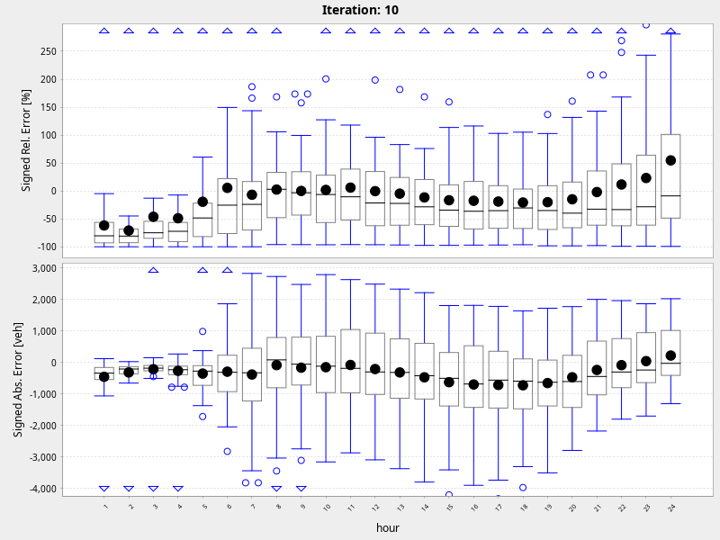

Multi-Agent Transport Simulation Toolkit
Counting Volumes
sim and real volumes:
hour: 1
hour: 2
hour: 3
hour: 4
hour: 5
hour: 6
hour: 7
hour: 8
hour: 9
hour: 10
hour: 11
hour: 12
hour: 13
hour: 14
hour: 15
hour: 16
hour: 17
hour: 18
hour: 19
hour: 20
hour: 21
hour: 22
hour: 23
hour: 24
errors:
errors
biasErrors
link volumes:
link100972
link105338
link132973
link169791
link172626
link184746
link18991
link225872
link226105
link253124
link258274
link262261
link26932
link300434
link315260
link332954
link33938
link359139
link370725
link370726
link468299
link476650
link480549
link488795
link493574
link494174
link497064
link497071
link513762
link520820
link541118
link559164
link564920
link566410
link566715
link580109
link584262
link598889
link598890
link706213
link714945
link714948
link730001
link730028
link750933
link78074
average working day sim and count volumes:
simVsRealVolumes24Iteration10
